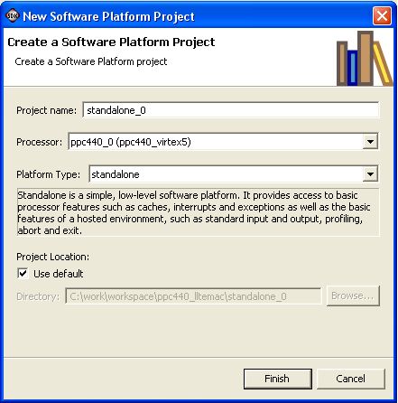

Creating a software platform
To create a new software platform do the following:
- Click File > New > Software Platform.
- In the Project name field, type a name for the software platform, such as standalone_0.
- From the Processor drop-down list, select the processor for which you want to build the software platform.
- From the Platform Type drop-down list, select the type of platform to create. A description of
the platform types displays in the box below the drop-down list.
- Select the location for the software platform project files. To use the default location, as displayed in the Directory field, leave the Use default check box selected. Otherwise, click to unselect the check box, then type or browse to the directory location.
- Click Finish. The wizard
creates a new software platform and displays it in the SDK Navigator pane.
- If Build Automatically is selected in the Project menu, the
software platform builds automatically.


Software platforms

Configuring a
software platform
Building a
software platform

New Software Platform Project dialog box
Copyright © 1995-2009 Xilinx, Inc. All rights reserved.